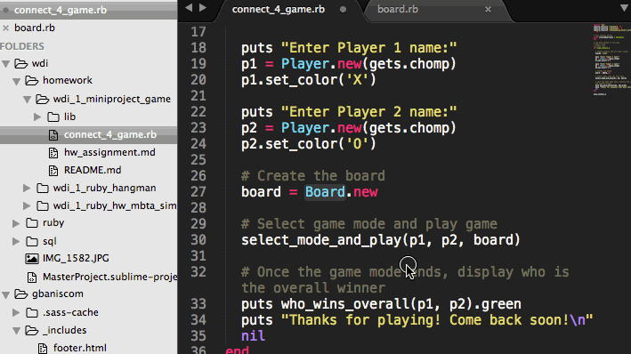

Bienvenue sur Sublime Text
Sublime Text propose aux développeurs un éditeur de texte qui se démarque des autres par son interface et ses fonctionnalités. L’application supporte la coloration syntaxique selon les langages de programmation utilisés.
Sublime Text dispose d’une interface pratique qui comprend un panel avec l’arborescence des dossiers des différentes sources éditées. Ensuite, on retrouve la gestion d’onglets pour un accès rapide aux fichiers en cours d’édition.
Sublime Text offre des fonctionnalités d’édition avancées telles que la modification de variables instantanées ou encore l’affichage en miniature du code sur un volet à droite du texte édité..
Les fonctionnalités favorites
goto anything
Utilisez Goto Anything pour ouvrir des fichiers en quelques touches seulement et accéder instantanément à des symboles, des lignes ou des mots.
Déclenchée avec Ctrl + P, il est possible de:
- Tapez une partie d'un nom de fichier pour l'ouvrir.
- Saisissez @ pour accéder aux symboles, # pour effectuer une recherche dans le fichier et : pour accéder à un numéro de ligne.
Ces raccourcis peuvent être combinés. Ainsi, tp@rf
peut vous amener à une fonction read_file dans un fichier text_parser.py. De même, tp:100
vous amènerait à la ligne 100 du même fichier.
multiple selections
Faites dix changements en même temps, pas un changement dix fois. Les sélections multiples vous permettent de modifier de manière interactive plusieurs lignes à la fois, de renommer facilement des variables et de manipuler des fichiers plus rapidement que jamais.
Essayez d'appuyer sur Ctrl + Maj + L pour scinder la sélection en lignes et sur Ctrl + D pour sélectionner l'occurrence suivante du mot sélectionné. Pour effectuer plusieurs sélections à l'aide de la souris, consultez la documentation sélection de colonnes.
palette de commandes
La palette de commandes contient les fonctionnalités rarement utilisées, telles que le tri, la modification de la syntaxe et les paramètres d'indentation. En quelques touches seulement, vous pouvez rechercher ce que vous voulez, sans avoir à naviguer dans les menus ou à vous souvenir des raccourcis clavier.
Affichez la palette de commandes avec Ctrl+Shift+P.
goto definition

En utilisant les informations des définitions de syntaxe, Sublime Text génère automatiquement un index à l'échelle du projet de chaque classe, méthode et fonction. Cet indice alimente Goto Definition, qui est exposé de trois manières différentes:
- Un popup est affiché lors du survol d'un symbole
- PressageF12 quand le curseur est sur un symbole
- La fonctionnalité Goto Symbol in Project
L'indexation des symboles peut être personnalisée syntaxiquement à l'aide de fichiers de configuration, permettant aux utilisateurs d'adapter la fonctionnalité à leurs besoins.